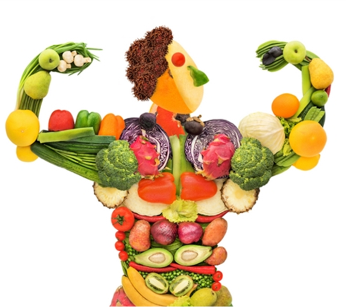
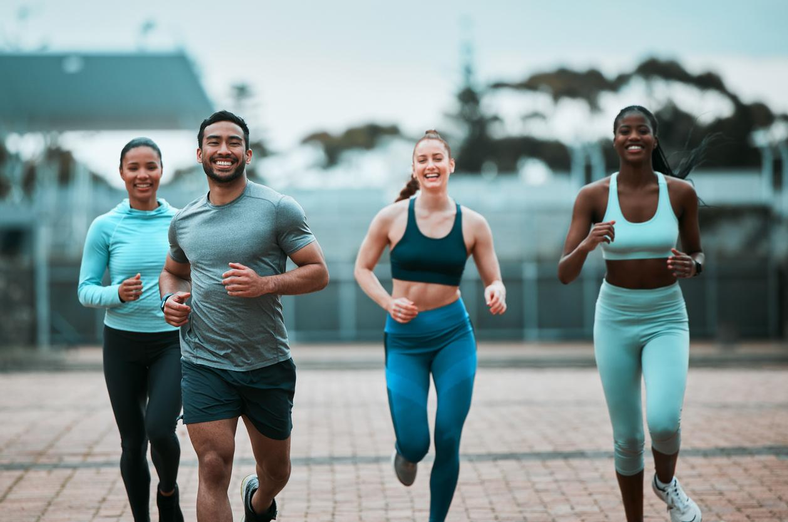

1. Mangez varié et équilibré
Variez les groupes d'aliments : légumes, fruits, protéines, céréales complètes et graisses saines.
Essayez de couvrir les besoins en vitamines, minéraux, protéines et fibres à chaque repas.

2. Privilégiez les aliments non transformés
Favorisez les aliments frais et non transformés (légumes, fruits, viandes maigres, poissons, noix, légumineuses).
Réduisez la consommation d'aliments ultra-transformés comme les snacks industriels, les plats préparés, ou les boissons sucrées.
3. Consommez des fruits et légumes à chaque repas
Les fruits et légumes sont riches en vitamines, minéraux et fibres. Visez au moins 5 portions par jour.
Variez les couleurs pour profiter d'une large gamme de nutriments (par exemple, épinards, carottes, poivrons, tomates, etc.).
2. Prends soin de ton sommeil
Routine de sommeil : Essaie de te coucher et de te lever à des heures régulières. Un bon sommeil est essentiel pour la santé mentale et physique.
Environnement propice : Crée un espace calme et confortable pour dormir (évite les écrans avant de te coucher, limite la lumière, et maintiens une température agréable).
Durée de sommeil : Vise 7 à 9 heures de sommeil par nuit pour récupérer efficacement.
4. Garde une alimentation saine
Une alimentation équilibrée joue un rôle clé dans ton bien-être global. Manger varié, avec des aliments riches en nutriments (fruits, légumes, protéines maigres), t’apporte de l'énergie et maintient un bon état de santé.
Hydratation : Boire suffisamment d'eau est essentiel pour ton corps et ton esprit.
3. Pratique la méditation ou la pleine conscience
Méditation : Consacre quelques minutes chaque jour à la méditation pour calmer ton esprit et réduire le stress. Il existe de nombreuses applications ou vidéos guidées pour t'aider à débuter.
Pleine conscience : Sois attentif au moment présent en te concentrant sur ta respiration, tes sensations, ou ton environnement. Cela aide à réduire l’anxiété et à améliorer ton bien-être mental.

1. Exercice cardiovasculaire pour la santé du cœur
Types d'exercices : Marche rapide, course, vélo, natation, ou même la danse. Ces exercices améliorent la circulation sanguine, réduisent le risque de maladies cardiovasculaires et renforcent le cœur.
Durée : Vise au moins 150 minutes d'activité modérée par semaine (ou 75 minutes d’activité intense). Cela peut être réparti sur plusieurs jours.
2. Renforcement musculaire pour maintenir la masse musculaire
Exercices : Utilise des poids libres, des machines de musculation, ou des exercices au poids du corps (pompes, squats, fentes).
Avantages : Le renforcement musculaire aide à prévenir la perte musculaire liée à l'âge, améliore la posture, et augmente le métabolisme.
Fréquence : Fais des exercices de renforcement deux à trois fois par semaine, en ciblant les grands groupes musculaires (jambes, dos, bras, abdominaux).
3. Flexibilité et étirements pour la mobilité
Exercices : Yoga, Pilates, ou des étirements statiques réguliers. Ces pratiques aident à maintenir la souplesse, à améliorer la posture, et à réduire les tensions musculaires.
Avantages : L’amélioration de la flexibilité réduit le risque de blessures et permet de mieux exécuter les mouvements quotidiens.